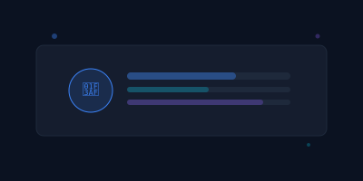
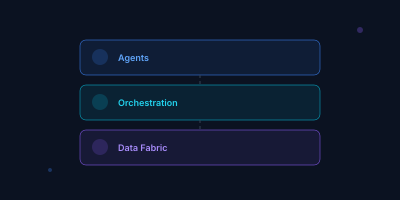
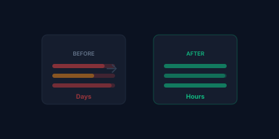
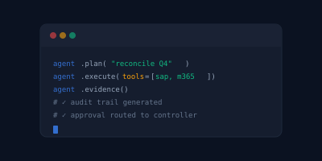
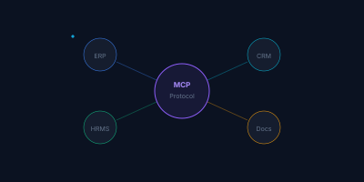
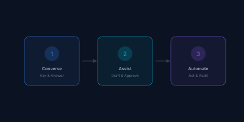
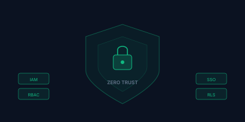
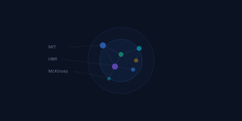

Thought leadership, architecture playbooks, and executive briefs — built for CIOs, CTOs, and enterprise architects navigating the agentic AI landscape.
Evergreen enterprise architecture resources — the foundational thinking behind cogentAI's approach.
From ESB to Agentic Fabric: the new enterprise integration layer. How orchestration, governance, and open standards replace brittle point-to-point connections.
The comprehensive guide to governing AI agents in the enterprise. Identity management, tool access control, decision traceability, and progressive autonomy.
Enterprise agentic AI — beyond the hype. Practical insights from the trenches of enterprise deployment.

Why enterprise success is grunt work and governance, not better chat UX. The case for customized agents over generic copilots.
Read article →
The P-E-E loop concept: Plan, Execute, Evidence. How enterprises shift from managing human workers to directing intelligent agents.
Read article →
The universal port thesis. Why MCP-native architectures will replace proprietary connectors as the enterprise integration standard.
Read article →
Real results: 40% ERP wait-time reduction, reconciliation from days to hours, automated compliance reviews with full lineage.
Read article →
Models change monthly; architecture endures. Why the real competitive moat is in orchestration, context management, and enterprise integration discipline.
Read article →
Why ERP-embedded AI is limited to its own data silo, and how context-aware agents reason across the full enterprise landscape.
Read article →
The progressive autonomy framework: from conversational analytics to semi-autonomous workflows to governed automation.
Read article →
MCP security, tool governance, and the case for treating agent tool access with the same rigor as API gateway policies.
Read article →
What research from leading institutions tells every business leader about the agentic AI landscape and enterprise readiness.
Read article →Our team produces tailored architecture assessments and executive briefings for enterprise evaluation teams.